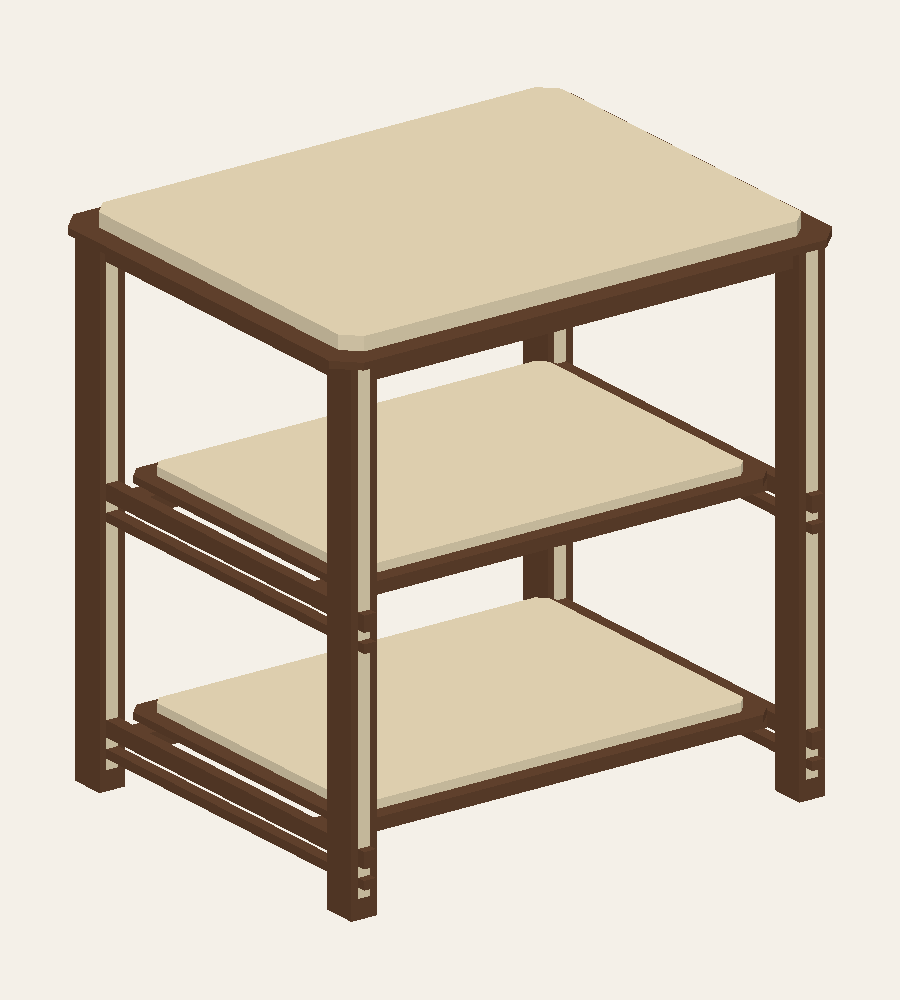
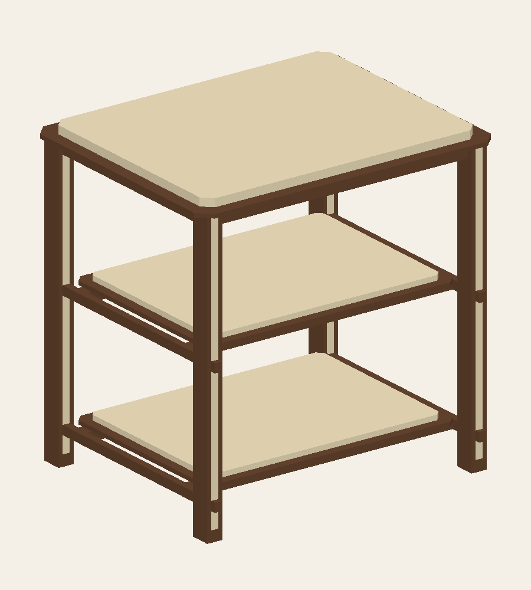
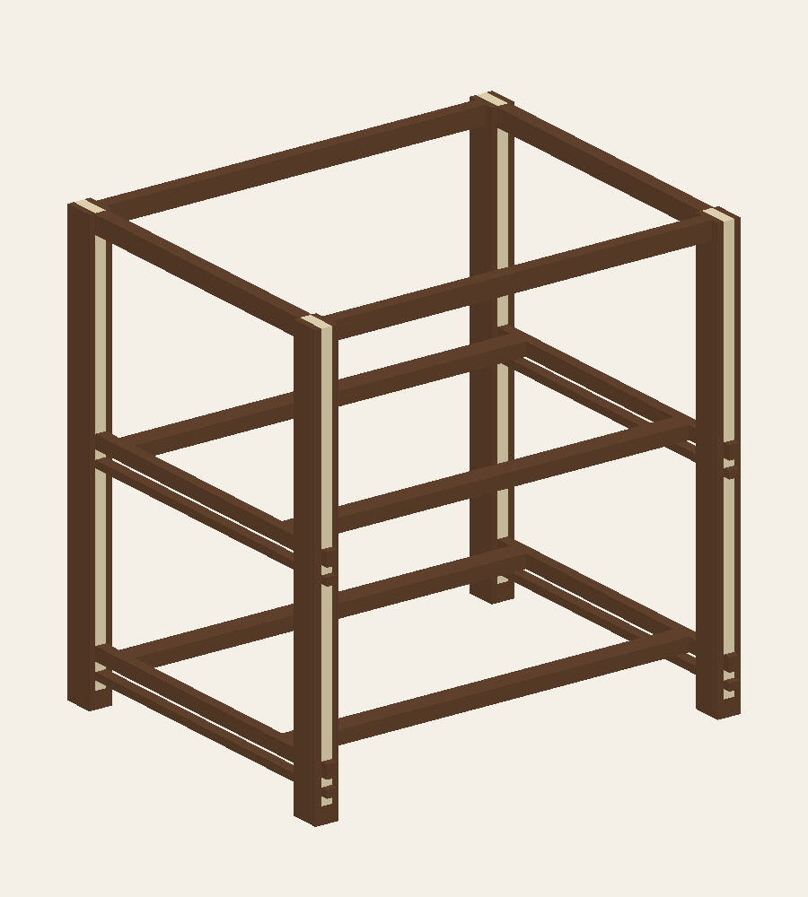

← 回到互動模型TB001 / D06 · LIGHT RHYTHM
少一條線，
不是少掉承托。
兩條保留一點節奏，一條更乾淨。兩版用同一相機、同一楓木配色、同一層板；主承條和橫托都保留。
02 / 兩條 · 目前主版

一條主承條＋一條次連結條。留白 12 mm；端頭穿出前後腳面各 10 mm。不再加小直墊塊。
01 / 一條 · 比較方案

只保留主承條與橫托；刪掉次條的同時補回腿芯槽，不是把已挖孔的木條藏起來。尚未替換主版。
力往哪裡走？

- 楓木貼皮夾板托盤
- 每層兩道橫向托梁
- 9 / 9 mm 名義半搭接
- 左右主承條，穿入腿芯槽
- 槽肩／三明治腿 → 腳墊
主承條 14 × 18 mm；橫托 28 × 18 mm。這裡展示正面積承托與槽口，不代表截面已通過載重測試。
視覺相同，不必整片胡桃木。
正常俯看保留淺色面＋深色薄台階；底下改成夾板芯，只在四周用胡桃木條。
中／下層收邊條平面寬 22 mm；頂層 28 mm。條延伸到抬高面下，淺色芯不會從深色台階露出。上層夾板覆接是固定提案，膠合與防抬起措施待確認。
底板的深色木料淨體積約減少 80.4%；不等於整體成本降幅。新增承托、貼皮、裁切損耗與工時需另行報價。背面改為淺色夾板芯，不是整片胡桃木。
楓木，不是橡木。
本版淺色面與腿芯指定楓木：乳白、淡紋、低對比；不再用蜂蜜黃與粗長木紋。面板採楓木貼皮夾板提案，腿芯為楓木；AI 只是材質氣氛，實際需看樣板。